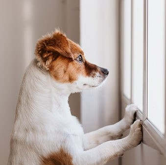
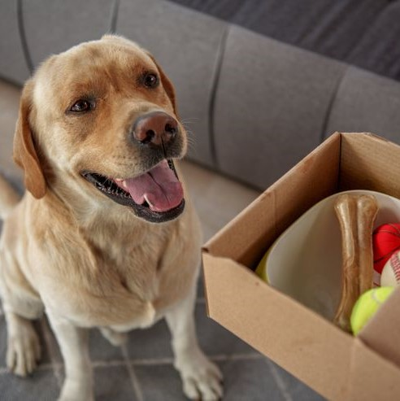
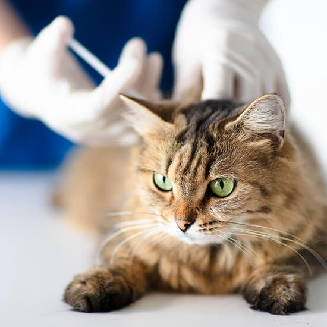

Pet Owner Resources
|  | Many pets around the world have been living their best life during COVID-19 with their owners working from home. They’ve had the chance to Zoom-bomb your important meetings. A few nudges and you take them on an extra walk. Most of all, you were around for all the attention and snuggles they wanted. |
|  | Just like with online grocery delivery services, there are online pet stores like Chewy that deliver everything from pet food, dog and cat toys, accessories and medication for your furry, feathered and scaly friends. With many more people now fostering and adopting pets as a result of the COVID-19 pandemic, welcoming a furry friend into your home, even if temporarily, can be an adjustment to your lifestyle and routine. Preparing your place with the right essentials can make for a smoother transition. |
|  | Puppies can begin their vaccinations from six weeks of age, and kittens from nine weeks. A course of two or three injections is required to give full protection. All dogs and cats require annual booster vaccinations against the major infectious diseases, in addition to the primary course when they are puppies/kittens. Make an appointment today. |
Community Outreach
Our community outreach programs work to increase access to medical care, animal care resources, and services for pets.
We provide field services including technical and non-technical rescues for injured domestic animals. If an animal is in imminent danger, contact your local Animal Control Office or Police Department for assistance.
Community Programs
- Low cost spay/neuter services for dogs and cats
- Free pet food and pet care supplies
- Free behavioral training and support
- Pop-up neighborhood vaccination clinics
- Free transportation to veterinary appointments
Contact Us
| Contact | Hours |
|---|---|
|
|
Monday-Wednesday: 9am - 8pm Thursday-Saturday: 10am - 8pm Sunday: 10am - 5pm |
 52 Commonwealth Avenue
52 Commonwealth Avenue (123) 456-7890
(123) 456-7890 vet@gbhs.org
vet@gbhs.org